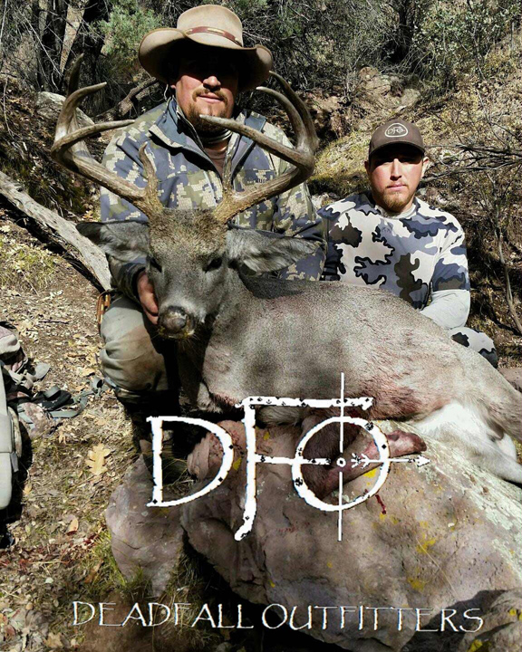

Coues Deer
 We are super passionate about hunting the elusive “Grey Ghost” the Coues deer. If you are looking for a challenge this little bodied big hearted deer is for you. This guy rarely tips the 100 lb. scale but pound for pound is the hardest to find and knock down. They are in country that most people pass up thinking its inhabitable only to bighorn sheep. It is truly one of the most unique hunts on the planet. These deer are in a whole other trophy class of their own! Rifle hunts take place in October, November and December. Archery tags are over the counter. Hunts start in January and reopen in August and December. Opportunity rates are always 100% with harvest rates over 90% on these hunts.
Elk
Bull Elk (Archery)
This is one of the most adrenaline pumping hunts in the world. Nothing grabs your attention more than a 700 lb. 350+ class raging bull screaming 30 yards in range. This hunt you will need to expect to stalk and/or call bugling bulls all day long. You may sit water or wallows in the evening as appropriate. If the rut is in full gear, it is not uncommon to stalk bulls all day. Our guides are experienced and are hunting trophy bulls targeting 350' and above bulls.Bull Elk (Trophy Rifle or Trophy Muzzleloader)
If you happen to pull this tag out of your pocket your one lucky hunter! These are some of the most desired elk hunts on the planet. These hunts are placed right in the middle of the rut to maximize trophy potential. Expect to pass up a large number of bulls. Patients will pay off! We are targeting bulls from 375' and up on over. Harvest rates on this hunt are typically 100% year after year for trophy 6x6 and bigger bulls.Bull Elk (Arizona Late Rifle or Late Archery)
The late rifle and late archery hunts typically take place in November and early December. These hunts are much easier to draw than the early hunts. These hunts we are hunting bachelor herds of bulls. It’s normal to find groups for 2 to 20. We are targeting 330+ class bulls. We have been fortunate enough to harvest 350 to 390+ class bulls on these late hunts. Be prepared for cold weather and a lot of time in the glass. Opportunity rates are typically 100% on these hunts.Cow Elk (Rifle or Archery)
Cow elk hunts are a great way to fill the freezer. Cow tags are fairly easy to come by. Archery hunts take place during the rut and are very exciting and fast paced. Rifle hunts take place in the later months when the elk are in large herds on winter range. Opportunity and harvest rates are 100% historically. These hunts are fun and are for all experience levels.Mule Deer
 Nothing looks better than a big ole Muley hanging on the wall! Arizona produces great mule deer from the snow covered peaks to the desert flats. Our season’s kick off with over the counter archery tags which run in January and then reopens in August for the velvet bucks. The season reopens in December to finish out the year. Rifle hunts run in the later months through the draw process and start in October through December. We have a great team of guides that run multiple units and put the time in to bring home trophy mule deer. Most of our hunting requires a lot of time in the glasses followed by spot and stalk. We are prepared to pack in horseback to put us deeper in to the backcountry.
Nothing looks better than a big ole Muley hanging on the wall! Arizona produces great mule deer from the snow covered peaks to the desert flats. Our season’s kick off with over the counter archery tags which run in January and then reopens in August for the velvet bucks. The season reopens in December to finish out the year. Rifle hunts run in the later months through the draw process and start in October through December. We have a great team of guides that run multiple units and put the time in to bring home trophy mule deer. Most of our hunting requires a lot of time in the glasses followed by spot and stalk. We are prepared to pack in horseback to put us deeper in to the backcountry.
Black Bear
 The rush of a close encounter with a 400 lb. Bruin will be burned into your mind forever. It doesn’t matter if you are creeping up to 20 yards to a cinnamon bear grubbing on prickly pears with a bow. Chasing chocolate bears in the deep canyons with a rifle. Glassing up black bears in the bluffs or if you are lucky enough to put your sites on a blonde. The images and experience is unforgettable. We are blessed that the great state Arizona is known for its color phase bears more than any other state. Our hunts are mostly spot and stalk and some occasional calling. The hunts start in August and run until the sow limits are filled, which is sometimes through November. Black bear hunting can be done over the counter with a near 100% success rate. These hunts book up fast!
The rush of a close encounter with a 400 lb. Bruin will be burned into your mind forever. It doesn’t matter if you are creeping up to 20 yards to a cinnamon bear grubbing on prickly pears with a bow. Chasing chocolate bears in the deep canyons with a rifle. Glassing up black bears in the bluffs or if you are lucky enough to put your sites on a blonde. The images and experience is unforgettable. We are blessed that the great state Arizona is known for its color phase bears more than any other state. Our hunts are mostly spot and stalk and some occasional calling. The hunts start in August and run until the sow limits are filled, which is sometimes through November. Black bear hunting can be done over the counter with a near 100% success rate. These hunts book up fast!
Javelina
Javelina hunting in Arizona is a blast! These hunts take place in January for archers and in February for muzzleloader, pistol and rifle. Hunts are conducted by spot and stalk and calling. Because of their poor eyesight, hunters can get up close a personal if the conditions are right. As such, they are perfect animals for bow hunting. They are perfect for a new hunter that’s getting started and are just fun for the most experienced. These animals can be aggressive which get the blood flowing. This is very much a fair chase hunt on public land. Harvest rates are typically 90% or more.
Turkey
For those who like getting their strut on spring turkey kicks off around late April and May. The fall hunts start at the end of August. We hunt these Gobblers with a stick and string or we put the pellets to them. Do to the Wallow Fire the turkey population has regained and gone through the roof. We are seeing huge folks with as many as fifty birds. It’s a sweet feeling watching three to six Gobblers bow up and strut their stuff as we are bringing them in.